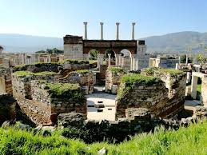
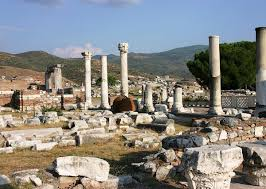

Bizans İmparatoru Iustinianus (527-565) tarafından MS. VI. yüzyılda yaptırılmıştır. alt katında kilise, şarap mahzenleri, mezarlar, su kanalı ve görevlilere ait mekânlar; üst katında ise İncil'den alınmış sahnelerle süslenmiş bir diğer kilise yer almaktadır.


 "İzmir"e dönmek için basın
"İzmir"e dönmek için basın